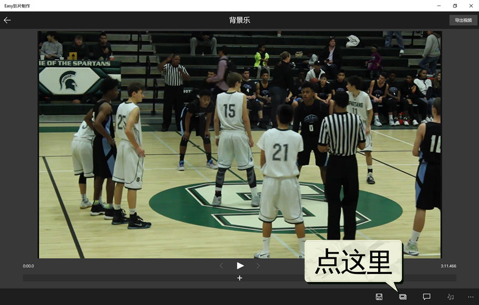
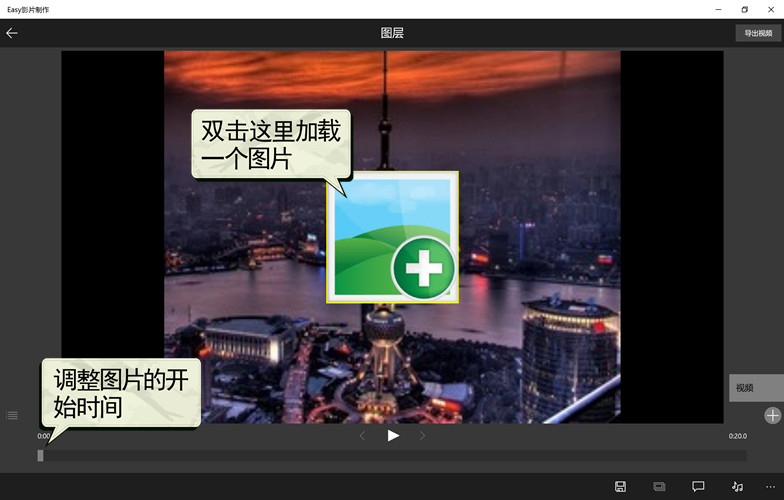
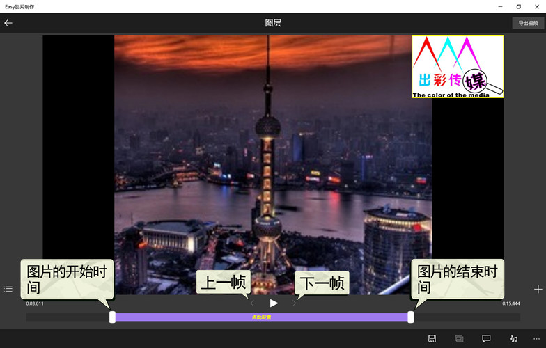
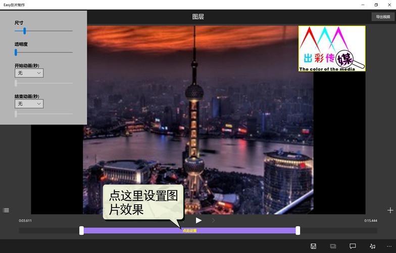
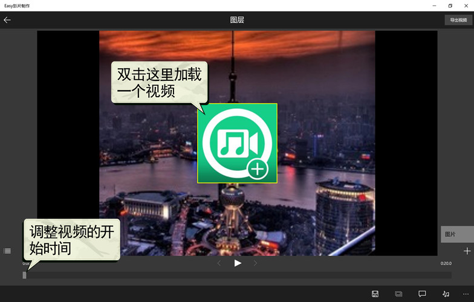
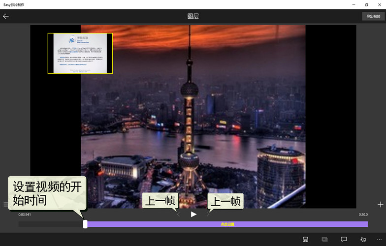
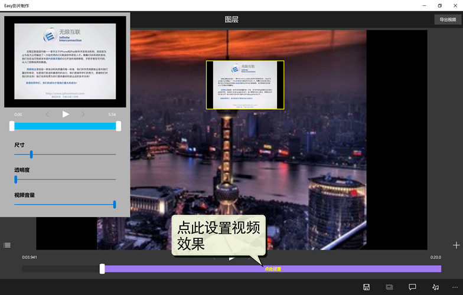
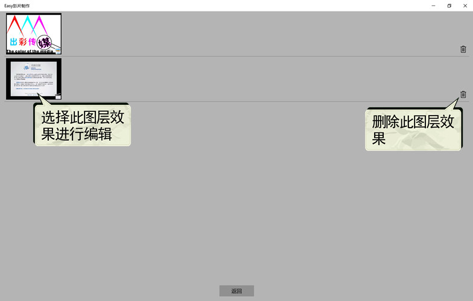

如何为视频叠加图片或视频
通过项目模式进入到“图层”编辑页。

图1：选择“图层”
通过移动屏幕底部的滑块调整图片开始的时间，双击屏幕中间的图标选取一个图片，按住图标区域可以任意调整位置，双击图标可替换该图片。

图2：叠加一个图片
通过移动屏幕底部紫色区域两侧的白色按钮，可以设置图片的开始和结束时间。

图3：调整图片的开始和结束时间
点击屏幕底部的紫色区域，弹出图层设置窗口。

图4：图片效果设置
点右下侧的“+”选择“视频”，通过移动屏幕底部的滑块调整视频开始的时间，双击屏幕中间的图标选取一个视频，按住图标区域可以任意调整位置，双击图标可替换该视频。

图5：叠加一个视频
通过移动屏幕底部紫色区域左侧的白色按钮，可以设置视频的开始时间。

图6：调整视频的开始和结束时间
点击屏幕底部的紫色区域，弹出图层设置窗口。

图7：视频效果设置
点击屏幕左下侧的 ，进入图层列表页，可选择、删除一个图层效果
，进入图层列表页，可选择、删除一个图层效果

图8：图层效果列表